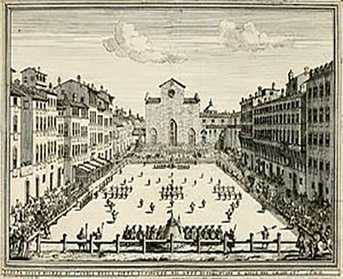
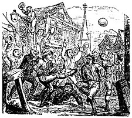

پیشینه فوتبال
اولین سوابق ثبتی آنچه که احتمالاً قدیمیترین فعالیت شبیه به فوتبال به حساب میآمده را میتوان در دست نوشتههای چینی نظامی در دوره سلسله هان و حدود قرن دوم قبل از میلاد پیدا نمود).
این بازی سالیان زیاد انجام میشد ولی بهنظر میرسد که در حدود نیمه قرن ۱۹ میلادی از بین رفته باشد. در سال ۱۹۰۳ و در یک اقدام سمبلیک در جهت احیای سنتهای باستانی، این بازی مجدداً احیاء گشته و هم اکنون نیز در برخی فستیوالهای توریستی قابل رویت میباشد.
قدمت بازیهای همراه با توپ فرا آمریکائی که با توپهای لاستیکی انجام میشدهاند حتی بسیار قبل از مورد بالا ثبت گردیدهاند و تصور میشود که در مراحل اولیه پیدایش، شباهت زیادی به فوتبال داشتهاند. اما از آنجائی که فرمهای بعدی این بازیها شباهت هائی با بسکتبال یا والیبال داشتهاند و همچنین به دلیل آنکه نفوذ این گونه بازیها بروی بازی مدرن فوتبال بسیار کم بودهاست، بیشتر آنها بهعنوان فوتبال طبقهبندی نمیگردند.
یونانیان و اهالی رم نیز به داشتن بازیهای همراه با توپ که در آنها از پای خود استفاده میکردهاند، شناخته شدهاند.
نویسنده رومی سیسرو در یکی از نوشتههای خود وضعیتی را توصیف میکند که در آن مردی در مغازه سلمانی و در حال اصلاح بخاطر شوت شدن یک توپ به داخل مغازه کشته میشود. اعتقاد بر این است که بازی رومی هارپستوم از نوعی بازی تیمی به نام «επισκυρος» (اپی اسکایروس) یا فنیدا که اولین بار توسط نمایشنامه نویس یونانی انتیفانس (۳۱۱-۳۸۸ قبل از میلاد) بکار برده شده و بعداً کلمنت الکساندریا نیز به آن اشاره داشتهاست، گرفته شدهاست. بهنظر میرسد این بازی بنوعی نه چندان واضح شبیه به راگبی بودهاست.
البته سوابق غیر مستند دیگری از بازیهای ماقبل تاریخ، باستانی یا سنتی انجام شده با توپ که توسط مردم بومی در سراسر جهان انجام میشده نیز در دسترس میباشند. بهعنوان مثال، در سال ۱۶۱۰ ویلیام استراچی از منطقه جیمز تاون اولین شخصی بود که یک نوع بازی به نام پاهساهمان را که توسط آمریکائی بومی باز میشده را ثبت نمودهاست. در منطقه ویکتوریا، استرالیا، مردم بومی استرالیا نوعی بازی به نام مارن کروک را انجام میدادند.در کتاب رابرت برو-اسمیت که در سال ۱۸۷۸ به نام «مردم بومی منطقه ویکتوریاً منتشر شد نیز از مردی به نام ریچارد توماس نام برده شده که در سال ۱۸۴۱ شاهد انجام این بازی توسط مردم بومی منطقه بودهاست.» آقای توماس توصیف مینماید که چطور بازیکن جلو توپ ساخته شده از پوست صاریغ را شوت نموده و دیگر بازیکنان برای گرفتن آن به هوا برمیخواستند.«امروزه اعتقاد گستردهای مبنی بر اینکه مارن کروک تأثیر زیادی بر پیشرفت قواعد فوتبال استرالیا داشته، وجود دارد (بخش زیر را ببینید). در سرزمین کانادای شمالی و / یا آلاسکا، اینیوایت (اسکیموها) نوعی بازی بروی یخ بنام»آکاساکتوک" را انجام میدادهاند. هر بازی با حضور دو تیم روبروی هم در دو خط موازی آغاز میشد. سپس دو تیم سعی در ضربه زدن به توپ، هدایت آن به سمت خط دروازه حریف و کاشتن گل داشتند.
قدمت این بازیها و امثال آنها بطور عمیق در روزگاران باستان قرار داشته و در طول قرون متمادی، تأثیر خود را بروی فوتبال داشتهاست. بهرحال، بهنظر میرسد که مسیر حرکت بسوی فوتبال مدرن در اروپای غربی و بخصوص در انگلستان شکل گرفته باشد.

فوتبال در قرون وسطی
در طی قرون وسطی شاهد افزایش بسیار زیاد محبوبیت مسابقات سالیانه فوتبال شرووتاید در سراسر اروپا خصوصاً انگلستان هستیم. بازی انجام شده در انگلستان در این زمان، احتمالاً از اشغال روم آغاز گشته، ولی شواهد متقنی در این زمینه در دسترس نمیباشد. گزارشهای که از نوعی بازی مرسوم در بریتانی، نرماندی و پیکاردی به نام «چوله» یا «سوله» در دست است، موید آنست که وجود برخی از انواع فوتبال در انگلستان نتیجه پیروزی نرمانها میباشد.
این نوعهای قدیمی فوتبال، که عادتا بهعنوان فوتبال عامیانه طبقهبندی میگشتهاند، بین تیمهای شهرها و روستاهای همجوار که شامل تعداد نامحدود بازیکن بودهاند بازی میشدهاند. این بازیکنان در میان انبوه جمعیت تلاش در کشیدن مثانه باد کرده خوک به سمت محلهای نشانگذاری شده واقع در دو سر شهر مینمودند (گاهی اوقات نیز به جای محلهای نشانگذاری شده، تیمها سعی میکردند که مثانه باد کرده خوک را بروی بالکن کلیسای حریف شوت کنند).
یک افسانه که میگوید سر منشاء این بازیها در انگلستان دارای قدمتی بیشتر بوده و به مراسم خونین لگد زدن به «سر بریده دان» برمیگردد، بعید بهنظر میرسد که حقیقت داشته باشد. بازیهای شرووتاید در شماری از شهرهای انگلستان هنوز وجود دارند (قسمت زیر را ببینید).
نخستین تعریف فوتبال در انگلستان توسط ویلیام فیتزاستیفن (۱۱۸۳-۱۱۷۴) ارائه گردید. او فعالیتهای جوانان لندن در خلال فستیوال سالیانه سه شنبه مذهبی را مورد توصیف قرار داد.
«پس از صرف ناهار تمام جوانان شهر به دشتهای اطراف میروند تا با توپ بازی کنند. دانش آموزان هر مدرسه توپ خود را دارند؛ کارگران اصناف شهر نیز توپهای خودشان را بهمراه دارند. بزرگترهای شهر، پدران و ثروتمندان سوار بر اسب وارد شده تا مسابقه جوانترها را دیده و خاطرات جوانی خود را زنده کنند: شما میتوانید شاهد انگیزش احساسات درونی آنها در هنگام دیدن بازی و غرق در شادی شدنشان فارغ از دغدغههای بزرگسالی باشید»..[۱]
اولین نامهای اطلاق شده به بازی بطور ساده عبارت بودند از «توپ بازی» یا «بازی با توپ». این نامگذاری موید آنست که بازی در آن زمان مستلزم ضربه زدن به توپ نبودهاست. بنابراین همانگونه که توضیح داده شده، ضربه پا بطور مسلم در بازیهای قرن ۱۴ وجود داشتهاند.
در مراسم ۱۳۲۱ بخشایش اویگنون توسط پاپ دوازدهم به ویلیام داسپالدینگ از شودهام اعطا گردید:
"تقدیم به ویلیام داسپالدینگ، حاکم اسکالدهام و بدستور سمپرینگهام. در طول بازی با توپ و هنگامیکه او به توپ ضربه زد، یکی از دوستان او که نام او نیز ویلیام بود جلوی او دوید که با چاقویی که توسط حاکم حمل میشد خود را بشدت مجروح نمود. بهطوریکه پس از شش روز جان خود را از داد. بخشایش اعطاء شد و هیچ توبیخی شامل ویلیام داسپالدینگ که خیلی از مرگ دوست خود اندوهناک بوده و آنطور که دشمنانش میگفتند هراس آن داشت که موضوع به پاپ کشیده شود، نمیگردد.
به همین ترتیب چاسر نیز کنایهای آزار دهنده نسبت به آنچه امروز فوتبال معاصر در انگلستان نامیده میشود، دارد. در داستانهای کانتربری (که بعد از سال ۱۳۸۰ نوشته شد) از این عبارت استفاده شدهاست «رولری زیر پا که کار توپ را انجام میدهد» [۲]. در سال ۱۳۶۳ اظهار زیر توسط ادوارد سوم بیان گردید. قابل ذکر است که در زمان حاضر بازی فوتبال در انگلستان کاملاً از بازی هندبال متمایز شدهاست.
«از آن گذشته ما فرمان میدهیم که در برابر بازیهای بیاساسی مانند پرتاب سنگ، چوب و آهن، هندبال، فوتبال، یا هاکی، تعلیم و اجرای جنگ خروسها، مجازات زندان و زیر آفتاب قرار دادن مقرر گردد».
اظهار نظر واضح بعدی راجع به فوتبال در سال ۱۴۰۹ و آن زمان بود که شاه هنری چهارم انگلستان فرمان منع آن را صادر نمود. در سال ۱۴۲۴، شاه جیمز اول انگلستان نیز سعی در منع فوتبال نمود. ولی بهرحال اولین اشاره مستقیم به استفاده از توپ در سال ۱۴۸۶ انجام شد..[۳] همچنین از تاریخ ۱۱ آوریل ۱۴۹۷ حسابی پولی به جی[خرید]اری نماید..[۴] قدیمیترین توپ فوتبال احتمالاً در سال ۱۵۴۰ در اسکاتلند و از جنس چرم و پوست مثانه خوک ساخته شد. (این توپ در سال ۱۹۸۱ در قسمت زیر سقف اتاق ملکه، قلعه استرلینگ کشف شده و هم اکنون در نگارخانه اسمیت در استرلینگ به معرض تماشا گذاشته شدهاست.) بهرحال، نمیتوان بهعنوان قطع و یقین تأیید نمود که مورد مصرف این توپ در بازی با پا بودهاست و نظر به سایز کوچک آن، موزه ملی اسکاتلند نظر داده که مورد مصرف آن در بازی مانند تنیس به نام پلوان بودهاست.
یک راهب قرن ۱۵ بازی فوتبال در کانتون ناتینگهام شایر را اینگونه توصیف نمودهاست: «بازیکنان یک توپ بزرگ را به جلو میرانند. اینکار را نه با پرتاب آن در هوا و بلکه با ضربه زدن و چرخاندن آن بروی زمین و نه با دستان بلکه با پا انجام میدهند. این اظهار موید آنست که بازیهای مشخص فوتبال ضربهای، در آن زمان در انگلستان مرسوم بودهاست. با این حال هنوز نمیتوان صد در صد مطمئن بود زیرا این راهب ادامه میدهد که :»میگویم یک بازی به اندازه کافی منفور.... که بندرت بدون باخت، حادثه یا زیان خود بازیکنان خاتمه مییابد. '[۵]
اولین رکورد ثبتی از یک جفت کفش فوتبال مربوط به زمانی است که هنری هشتم در سال ۱۵۲۶، دستور آوردن آن از کمد بزرگ را صادر نمود [۶]. بدبختانه این کفشها در حال حاضر وجود ندارند. ولی بهرحال این مورد ثابت میکند که شاه انگلستان به این بازی توجه داشتهاست.
مشهور بودن فوتبال بهعنوان یک بازی خشن در اکثر آثار بعد از قرن ۱۶ انگلستان آورده شدهاست. در سال ۱۵۳۱ سر توماس الیوت این عبارت که مجدداً خطر فوتبال (و همچنین منافع تیر اندازی) را یاد آور میگشت را در «کتابی به نام حاکم» آوردهاست:
"ممکن است برخی از مردان بگویند که در این میانه، که من خیلی زیاد از تیر اندازی تعریف میکنم. چرا رشته هائی مانند بولینگ، کلاشه، پاینز، و کایت را توصیه نمیکنم؟ حقیقتا بدو دلیل آخر که برای اشراف زادگان مهم است، فوتبال چیزی نیست جز خشم و خشونت زیاد؛ جائیکه روش بازی، عناد و عدم کمک به مصدومین است؛ جائیکه مصدوم در سکوتی ابدی باقی میماند. در کلاشه نیروی کمی بکار گرفته میشود. در بولینگ اغلب وقت بسیار زیاد است؛ در حالیکه در ساینوز تلاش زیادی بکار میرود و شراب زیاد نوشیده میشود. در حالیکه اغلب زمان یا کاهش نیرو و چالاکی بازوها همراه است. جائیکه
در تیر اندازی، اگر تیرانداز از قدرت کمان استفاده نکند، هرگز نمیتواند موفق گردد.
اولین اشاره به فوتبال در ایرلند در سال ۱۵۲۷ در اساسنامه گالوی آمده که در آن اجازه بازی فوتبال و تیر اندازی صادر شده ولی «هاکی» و امدش؛ نوعی هاکی پانزده نفره که با توپ کوچک و چوب بازی میشده بهمراه دیگر رشتههای ورزشی منع شدهاند. (اولین مسابقه ثبت شده فوتبال در ایرلند به سال ۱۷۱۲ و بین تیمهای روستا و میث در اسلین بوقوع پیوستهاست.)
در سال ۱۶۲۵ سر رابرت کری در کتاب خود با نام خاطرات معاملات مرزی به یک جلسه با هدف برگزاری بازی فوتبال در کلسو واقع در مرزهای اسکاتلند اشاره میکند که با «تعدی انگلستان خاتمه مییابد». او چنین فوتبالی را بهعنوان «مسابقهای با نهایت خشونت و حوادث وخیم که در درگیریها بوجود میآید، توصیف مینماید»!
